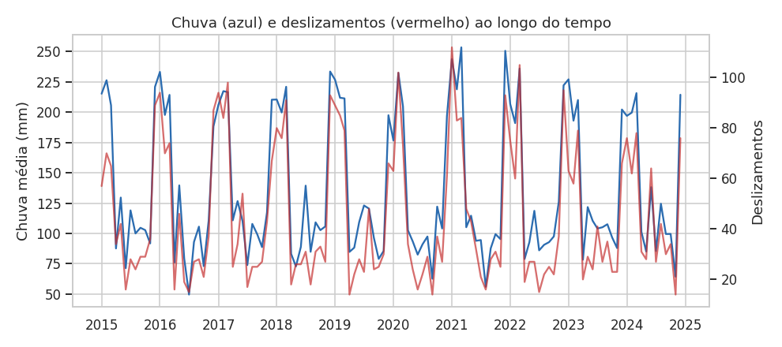
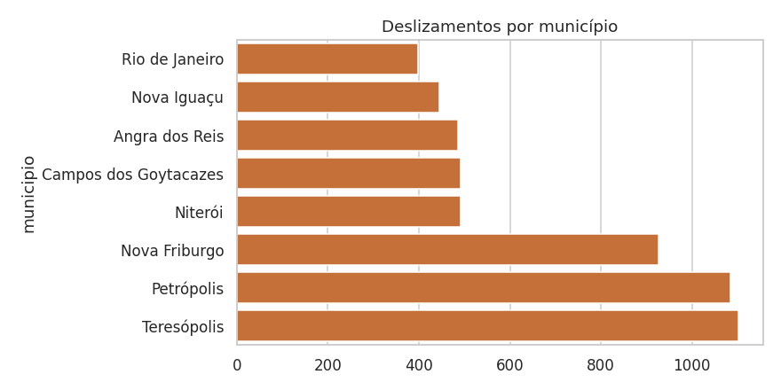
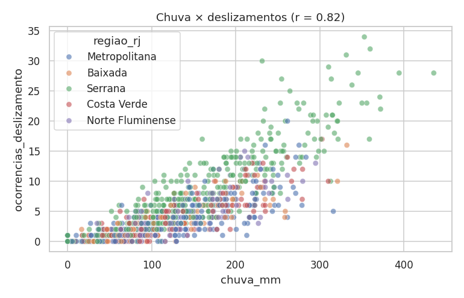
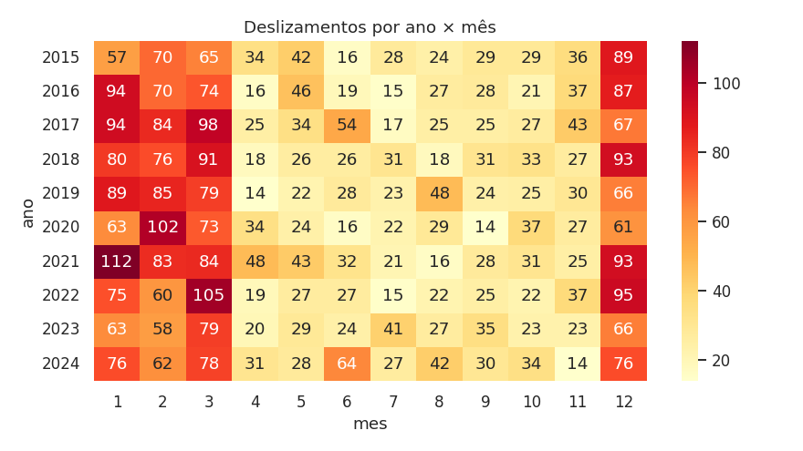

O problema
Chuvas intensas em áreas de encosta provocam deslizamentos, desalojados e óbitos, sobretudo nas cidades serranas. O projeto analisa uma base simulada (8 municípios, 2015–2024, 960 registros mensais) para identificar municípios vulneráveis, períodos críticos e a relação entre chuva e deslizamentos.
▶ Abrir dashboard GitHubIndicadores principais
Evolução temporal

Chuva e deslizamentos sobem e descem juntos, com picos todo verão.
Municípios

Teresópolis, Petrópolis e Nova Friburgo (Serra) somam mais da metade dos deslizamentos, apesar de o volume de chuva ser parecido com o dos demais municípios.
Correlação

Correlação forte e positiva (r ≈ 0,82); na região Serrana chega a 0,89.
Sazonalidade

De dezembro a março a chuva média é ≈ 214 mm/mês e há ≈ 10 deslizamentos/mês; no resto do ano, ≈ 98 mm e ≈ 3,5.
Conclusão executiva
O risco combina chuva de verão com vulnerabilidade do terreno serrano. Recomenda-se priorizar alertas e contenção na Serra antes de dezembro. A base é simulada: os resultados são didáticos.